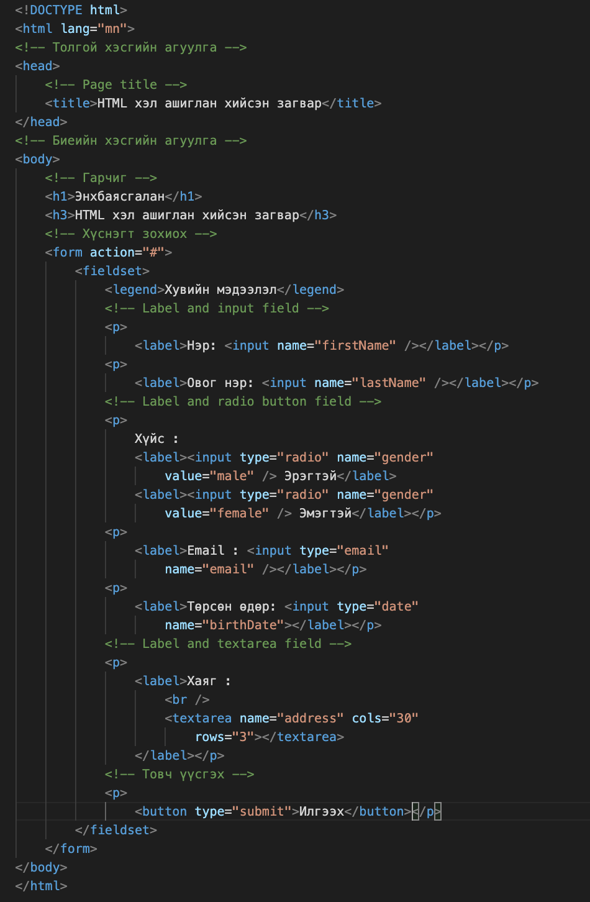
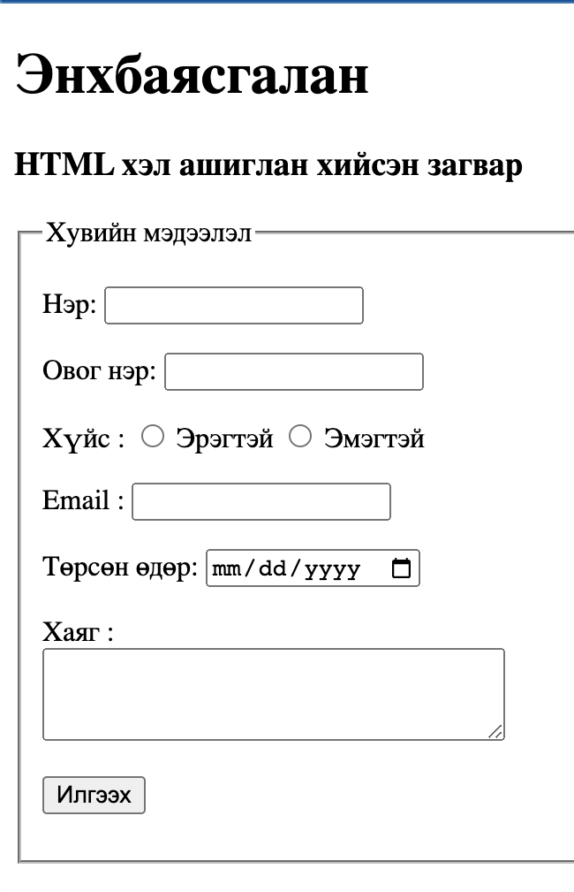

Веб сайт нь тодорхой нэг сэдвийн дагуух өөр хоорондоо гипертекстээр холбогдсон веб хуудсуудын цуглуулгыг веб сайт (Web Site) гэнэ. Олон веб хуудсуудаас тогтох цогц мэдээллийн санг веб сайт гэх ба веб сайтыг дуудахад хамгийн түрүүнд нээгдэх веб хуудсыг нүүр хуудас (Home Page) гэнэ. Веб сайт хийхэд таньд компьютер, notepad эсвэл visual studio код бичдэг программ хэрэг болно. Үүний өмнө та HTML гэх хэлний тодорхой түвшиний мэдлэгтэй байх хэрэгтэй ба та энэ хэлийг анхан шатийг доошоо гүйлгээд суралцаж болно. Үүний дараагаар та кодоо бичих гэж бүү яараарай эхлээд та ямар вэб сайт хийх гэж байгаа түүнийхээ загвар болон бүтэцийг гаргаж зурах эсвэл бичих хэрэгтэй. Үүний дараагаар та төлөвлөгөө гарган кодоо бичиж веб хуудсаа хийж болно.
HTML гэж юу вэ?
HTML гэдэг нь Hyper Text Markup Language гэсэн үгийн товчлол бөгөөд веб хуудсан текстийг хэрхэн харагдуулахыг веб браузерт зааж өгдөг программын кодчлол юм. Уг хэлийг Tim Berners-Lee 1991 онд шинжлэх ухааны бичиг баримтыг зохион байгуулах, өөр өөр платформ руу дамжуулах зорилгоор үүсгэсэн.

HTML Кодчилолын Бүтэц
HTML хуудасны үндсэн бүтцийг доор зургаар харуулсан. Энэ нь бүх веб хуудсыг үүсгэх үндсэн элементүүд (жишээлбэл, баримт бичгийн төрөл, HTML, толгой, гарчиг, биеийн элементүүд) агуулдаг.

- "DOCTYPE! html" –- Баримт бичгийн төрөл эсвэл баримт бичгийн төрлийн мэдэгдэл нь веб хөтчид одоогийн хуудас бичигдсэн тэмдэглэгээний хэлийг хэлдэг заавар юм. Энэ нь элемент эсвэл таг биш юм. Баримт бичгийн хэв маягийн мэдэгдэл нь жижиг үсгийг харгалздаггүй.
- "html"-- Энэ таг нь HTML баримт бичгийн үндсэн элементийг тодорхойлоход хэрэглэгддэг. Энэ таг нь HTML баримт бичиг гэдгийг хөтчид хэлдэг. Энэ нь бусад бүх элементүүдийг агуулсан хоёр дахь гаднах савны элемент юм.
- "head"-- энэ таг нь баримт бичигтэй холбоотой мэдээллийг агуулсан HTML баримт бичгийн толгой хэсгийг тодорхойлоход хэрэглэгддэг. Толгойн таг доторх элементүүд веб хуудасны нүүрэн талд харагдахгүй байна.
- "body"-- Үндсэн таг нь веб хуудасны харагдах бүх агуулгыг хаахад хэрэглэгддэг. Өөрөөр хэлбэл, үндсэн контент нь хөтөчийн нүүрэн талд харагдах зүйл юм.
Жишээ нь
 Дэлгэрэнгүй судалж суралцвал доорх сайтаас сурч болно.
https://www.geeksforgeeks.org/https://www.w3schools.com/